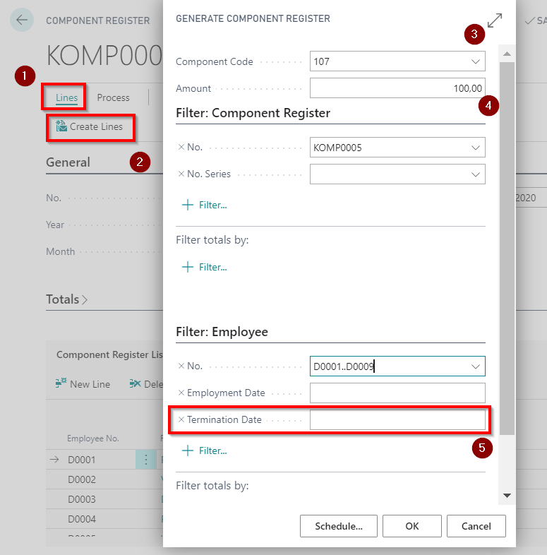

Automatic Generation of the Lines
If the premiums and deductions are to be entered for all (or for most of all) employees with the same first and/or second dimension value, then the lines of register can be generated automatically:
Click on Lines (
 ) - Create Lines (
) - Create Lines ( ).
).In the line generation window should be filled Component Code(
 ) - select from the list an appropriate income or deduction payroll component code. In this case, all selected employees will be automatically added to the specified payroll component. If necessary, afterwards this component can be corrected manually in the register lines.
) - select from the list an appropriate income or deduction payroll component code. In this case, all selected employees will be automatically added to the specified payroll component. If necessary, afterwards this component can be corrected manually in the register lines.In case if to all employees should be entered the same premium or deduction amount, can be use the field Amount (
 ). If necessary, afterwards this component can be corrected manually in the register lines;
). If necessary, afterwards this component can be corrected manually in the register lines;In the filter tab Employee can be entered the necessary employee selection criteria's. For instance, dimension values, what are attached to the employees' card;
To filter only those employees who worked in the selected month (not terminated till the beginning of the month), in field Termination Date (
 ) the filter with two apostrophes should be applied (‘ ’). This means that only employees who have empty Termination field in the Employees card will be selected;
) the filter with two apostrophes should be applied (‘ ’). This means that only employees who have empty Termination field in the Employees card will be selected;

- When all the fields and filters of the component register row are entered, press button OK to start to generate the lines.
- all the empty value fields (if any) should be completed in the generated lines.
- If necessary, this list can be adjusted, by deleting the excess employees. Do this by highlighting the lines of the deleted employee record and right-click the option Delete the row (Ctrl + Del);
- If necessary, all components and amounts can be corrected manually in the register lines;
- In case of only one salary component was selected from the beginning (for example, Bonus component No. 107) and turned out that also deductions components must be generated or some kind of other bonus components, the it is possible to start to Create Lines function again to add required lines.